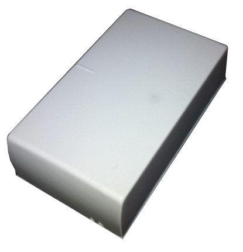
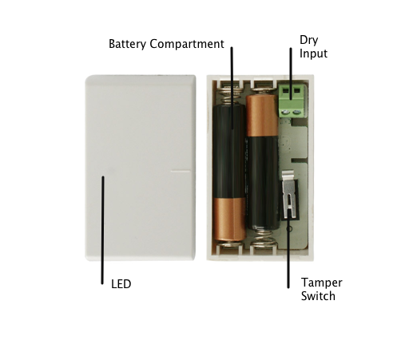

ZME_ITEMP
Firmware Version : 1.0 |
 |
Quick StartS This device is a Z-Wave Sensor. A tripple click on the tampering switch behind the battery cover within 1.5 seconds will confirm standard inclusion and exclusion, double click confirms network wide inclusion. A single click on the same switch will wake up the device and keeps it awake for 10 seconds. Please refer to the chapters below for detailed information about all aspects of the products usage. |
Product description
This product is a combination of a temperature sensor, a binary sensor with external switches and a thermostat controlling a remote heating device by comparing the target temperature set with the measured temperature. The three functions can be used in parallel or independent of each other. The device is battery operated and can be placed on every flat surface either using screws or double sides tape.
Installation Guidelines
The devices cover can be mounted on every flat surface either using two screws or strong double sides type. Insert both the batteries (2 x AAA) into the battery case while paying attention to the indicated plus (+) / minus (-) poles. The iTemp can now be mounted. The device itself is then just pushed on the cover. Make sure the dry input terminals match with the little spacing on the edge of the cover part.
Attention: The electronic circuit of the iTemp can be damaged in the case of wrong insertion of batteries.
Behavior within the Z-Wave network
I On factory default the device does not belong to any Z-Wave network. The device needs to join an existing wireless network to communicate with the devices of this network. This process is called Inclusion. Devices can also leave a network. This process is called Exclusion. Both processes are initiated by the primary controller of the Z-Wave network. This controller will be turned into exclusion respective inclusion mode. Please refer to your primary controllers manual on how to turn your controller into inclusion or exclusion mode. Only if the primary controller is in inclusion or exclusion mode, this device can join or leave the network. Leaving the network - i.e. being excluded - sets the device back to factory default.
If the device already belongs to a network, follow the exclusion process before including it in your network. Otherwise inclusion of this device will fail. If the controller being included was a primary controller, it has to be reset first.
Once the controller is turned into standard inclusion mode tripple click the tamper switch will include the device. In case the controller is in network wide inclusion mode a double click will confirm inclusion. In case of doubt about the type of inclusion please assume standard inclusion.
Operating the device
The temperature sensor function (communication pattern 3) can be used without any further installation or configuration. The binary sensor function is available on the two terminal blocks inside the device. Please wire these terminals to the external switch that can be used. Beware: You must not power the two terminals. They are only connected with an external switch that is connecting the two wires or not. Switching the binary input can be used to control a wireless actor using Z-Wave commands (communication pattern 4).
The device can be used as a room thermostat. This function monitors the measured temperature against a desired temperature set point or a temperature range defined by a lower and an upper temperature trigger. The setpoint temperature can be set wirelessly using a Z-Wave command (Command Class Temperature Setpoint) iTemp will send on and off commands to a wirelessly controlled heating device (communication pattern 4) to keep the temperature within the desired range. Please refer to the description of the configuration parameters 1,2,4 and 5 for more information how to control wireless devices and how to set a desired temperature range.
Wakeup Intervals - how to communicate with the device?
W This device is battery operated and turned into deep sleep state most of the time to save battery life time. Communication with the device is limited. In order to communicate with the device, a static controller C is needed in the network. This controller will maintain a mailbox for the battery operated devices and store commands that can not be received during deep sleep state. Without such a controller, communication may become impossible and/or the battery life time is significantly decreased.
This device will wakeup regularly and announce the wakeup state by sending out a so called Wakeup Notification. The controller can then empty the mailbox. Therefore, the device needs to be configured with the desired wakeup interval and the node ID of the controller. If the device was included by a static controller this controller will usually perform all necessary configurations. The wakeup interval is a tradeoff between maximal battery life time and the desired responses of the device.
iTemp is awake right after inclusion for 2.5 seconds allowing the controller to perform certain configuration. It is possible to manually wake up the device by pushing the tamper switch. iTemp will accept wakeup intervals between 4 minutes and 180 days.
It is possible to set the node ID to 255 to send wakeup notifications as broadcast. In this mode device takes more time to go to sleep and drains battery faster, but can notify all it's direct neighbors about a wakeup.
Node Information Frame
NI The Node Information Frame is the business card of a Z-Wave device. It contains information about the device type and the technical capabilities. The inclusion and exclusion of the device is confirmed by sending out a Node Information Frame. Beside this it may be needed for certain network operations to send out a Node Information Frame.
A single click on the tampering switch behind the battery cover will send out a Node Information Frame.
Associations
A Z-Wave devices control other Z-Wave devices. The relationship between one device controlling another device is called association. In order to control a different device, the controlling device needs to maintain a list of devices that will receive controlling commands. These lists are called association groups and they are always related to certain events (e.g. button pressed, sensor triggers, ...). In case the event happens all devices stored in the respective association group will receive a common wireless command.
Association Groups:
| 1 | Nodes to be switched on/off on temperature upper border cross (max. nodes in group: 5) |
| 2 | Nodes to be switched on/off on temperature lower border cross (max. nodes in group: 5) |
| 3 | Nodes to be switched on/off on dry contacts switch (max. nodes in group: 5) |
| 4 | Nodes to be controlled by thermostat (max. nodes in group: 5) |
| 5 | Nodes to receive updates on thermostat set point change and binary reports (max. nodes in group: 5) |
Configuration Parameters
Z-Wave products are supposed to work out of the box after inclusion, however certain configuration can adapt the function better to user needs or unlock further enhanced features.
IMPORTANT: Controllers may only allow to configure signed values. In order to set values in the range 128 … 255 the value sent in the application shall be the desired value minus 256. For example: to set a parameter to 200 it may be needed to set a value of 200 minus 256 = minus 56. In case of two byte value the same logic applies: Values greater than 32768 may needed to be given as negative values too.
| Value | Description |
|---|---|
| 65136 — 65535 | in 0.1 C |
| 0 — 500 | in 0.1 C (Default 0) |
| Value | Description |
|---|---|
| 65136 — 65535 | in 0.1 C |
| 0 — 500 | in 0.1 C (Default 400) |
| Value | Description |
|---|---|
| 0 | Basic On on connected, Basic Off on diconnected (Default) |
| 255 | Basic Off on connected, Basic On on diconnected |
| Value | Description |
|---|---|
| 0 | Basic On if greater than level, Basic Off if lower (Default) |
| 255 | Basic Off if greater than level, Basic On if lower |
| Value | Description |
|---|---|
| 0 | Basic Off if greater than level, Basic On if lower (Default) |
| 255 | Basic On if greater than level, Basic Off if lower |
| Value | Description |
|---|---|
| 0 | Off |
| 255 | On (Default) |
| Value | Description |
|---|---|
| 0 | Off |
| 255 | On (Default) |
| Value | Description |
|---|---|
| 0 | Off |
| 255 | On (Default) |
| Value | Description |
|---|---|
| 0 | No |
| 255 | Yes (Default) |
| Value | Description |
|---|---|
| 5 — 50 | in 0.1 C units (Default 10) |
| Value | Description |
|---|---|
| 5 — 50 | in 0.1 C units (Default 10) |
| Value | Description |
|---|---|
| 0 | send only once (Default) |
| 1 — 255 | each Nth wakeup time |
| Value | Description |
|---|---|
| 0 | No (Default) |
| 1 | To wakeup node |
| 2 | To broadcast |
Technical Data
| IP Rating | IP 20 |
| Battery Type | 2 * AAA |
| Frequency | 868.42 MHz (SRD Band) |
| Wireless Range | up to 100 m outside, on average up to 20 m inside buildings |
| Explorer Frame Support | Yes |
| SDK | 4.54 pl1 |
| Device Type | Slave with routing capabilities |
| Generic Device Class | Multilevel Sensor |
| Specific Device Class | Routing Multilevel Sensor |
| Routing | No |
| FLiRS | No |
| Firmware Version | 1.0 |